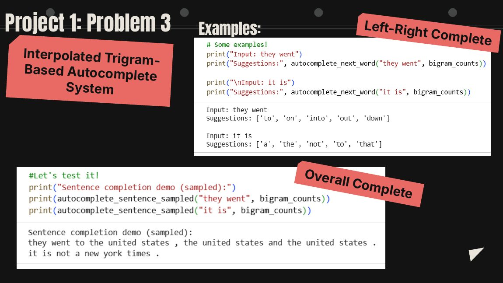
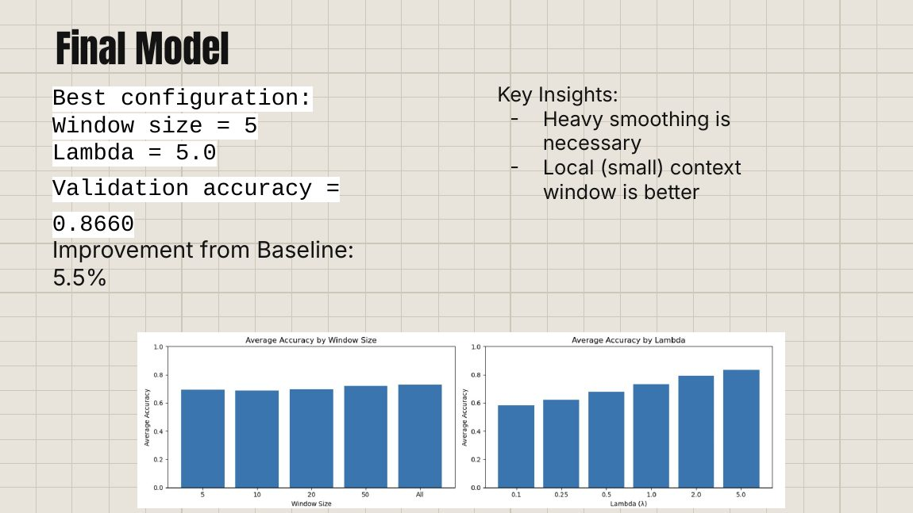

Advanced Text Analytics
Teaching a computer to finish your sentence, and to know which meaning of a word you meant.
Overview
Two language problems solved from first principles. The first is an autocomplete system that predicts the next word and can finish a whole sentence. The second is word-sense disambiguation: given a word in context, decide which dictionary meaning it carries. Each is built, tuned, and compared against simpler baselines.
How the autocomplete works
The system takes partial text, looks at the last word, and retrieves candidate next words from an interpolated trigram language model. Candidates are ranked by frequency and probability, and the top suggestions (or a continued sentence) are returned. Typing “They went” suggests to, on, into, out, and down.
The language model
The interpolated trigram model blends three levels of context so that rare phrases don't break it.
- Combines trigram, bigram, and unigram probabilities to handle sparse data: P = α·P(trigram) + β·P(bigram) + (1 − α − β)·P(unigram).
- Add-λ smoothing prevents zero probabilities for word sequences never seen in training.
- A temperature setting (T) controls the output. Below 1 gives safer, high-probability words. At 1 sampling is neutral. Above 1 gives more diverse, creative text.


What it can and can't do
Trigram models capture richer local word dependencies than simpler ones, and temperature scaling makes the creativity controllable. The limit is that they can't model long-range structure in a sentence.
The problem
For a target word in context, which dictionary sense does it express? The data was split into 22,272 training, 933 validation, and 3,916 test examples. Two families of methods were built and compared: a supervised Naive Bayes classifier and dictionary-based Lesk methods.
Supervised approach: Naive Bayes
Set the baseline
Always predicting the most frequent sense seen in training gives 0.8114 validation accuracy.
Try plain Naive Bayes
With add-1 smoothing it scored 0.7245, below the baseline, because the features are sparse and the smoothing is too light.
Engineer the features
Bag-of-words and position-specific features, with stopwords removed and words lemmatized.
Tune the model
A grid over context window (5, 10, 20, 50, full) and smoothing λ (0.1 to 5.0).
Pick the winner
A window of 5 with λ = 5.0 reached 0.8660 validation accuracy, 5.5 points above the baseline. Heavy smoothing and a small local window both mattered.

Dictionary approach: the Lesk family
Simple Lesk
Compare the words around the target with each sense's dictionary definition and examples. No training needed. Looking words up by lemma lifted validation accuracy from 0.228 to 0.518.
Corpus Lesk
Enrich each definition with words from labeled training data. This fixes vocabulary mismatch, such as a loan context against a bank definition that never mentions loans.
Embedding Lesk
Represent the context and each definition as average spaCy word vectors (en_core_web_md) and pick the sense with the highest cosine similarity, so synonyms like car and automobile still match.
Hybrid Lesk
Blend word overlap and vector similarity into one score.
Validation accuracy, all methods
Hard accuracy on the validation set. Higher is better.
Soft expected accuracy, Lesk family
Hard accuracy treats every miss the same. Soft scoring measures how much probability the model gave the right sense.
Takeaways
- Supervised Naive Bayes is strongest when there is enough labeled data (0.8660).
- Dictionary methods need no parameter training and suit cases with limited labeled data.
- Corpus evidence greatly improves dictionary methods (0.518 to 0.829), and adding embeddings squeezes out a little more (0.831).
- Gloss-only methods suffer from vocabulary mismatch. Combining word overlap with embeddings gives the best dictionary-based result.